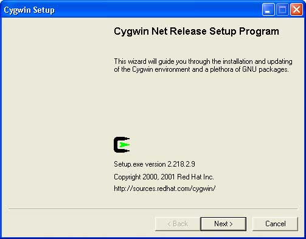

| [ < ] | [ > ] | [ << ] | [ Up ] | [ >> ] | [Top] | [Contents] | [Index] | [ ? ] |
Philip Wyett philipwyett@dsl.pipex.com. Last updated 13 Dec 2004.
These instructions are for building Crystal Space with Cygwin a GNU compiler for Windows created by Red Hat Inc. and other third party contributors.
A full or extensive Cygwin installation can take up alot of hard disk space. Please be careful if installing on low free space disks. A typical install can be around 400MB and large above 700MB. Note, however, that a full installation of Cygwin is not required for building Crystal Space. It is possible to get by with a fairly minimal installation consisting of the GCC compiler and linker suite and related tools, and several support libraries as discussed below.
Cygwin uses a custom setup application for installation of Cygwin which can be obtained from their official website.
The installation program `setup.exe' must be downloaded to your computer.
http://www.cygwin.com/setup.exe
First, go to the location where you downloaded the Cygwin `setup.exe'. It is suggested that you download it into a directory of its own since it will place additional files in that directory later on when it downloads the actual Cygwin packages.
Launch `setup.exe' to begin the installation process.
You will first be prompted with a Cygwin welcome dialog. It provides basic information about the setup program, such as its version number.

Click on the Next button to continue.
The next dialog you will see is the Choose a Download Source dialog. Here you need to choose if you wish to download and install directly from the internet or download to your system so you can install it later. Cygwin can install, uninstall, and update using this program. So, the decision is whether or not you want to download and keep the downloaded files around in order to avoid a large download at a later date if you re-install. If you have a fast Internet connection, then you can download and install directly without saving the packages to your disk drive. This is a matter of personal preference.

After deciding, click on the Next button to continue.
Note: For the purposes of this discussion, it is assumed that you are installing directly from the Internet.
The next dialog you will see is the Select Root Install Directory dialog. The first thing to choose is the location of where Cygwin should be installed. It is suggested that you install in a directory named `cygwin' at the location of your choice. Point the installer at that directory.
The next thing to decide, if you are a system administrator, is if you want any other users of that computer to have access to Cygwin. Also you are asked if you wish to use DOS text file line-ending format (CR/LF) or Unix format (LF). This is all a matter of preference for the user. If you are a pure Windows users it is suggested that you choose the DOS option. However, if you might move files to a Unix machine, for instance, it could be favorable to use the Unix option.

After deciding upon a root install location and other options, click on the Next button to continue.
The next dialog you will see is the Select Local Package Directory dialog. This directory is corresponds to the location where you placed the Cygwin `setup.exe' program.

If they correspond, click on the Next button to continue.
The next dialog is the Select Your Internet Connection dialog. This lets you specify the type of connection you have. Most of the time it will be a Direct Connection. However, if you access the Internet via proxy server, then select that option and enter the necessary information.

After choosing your internet connection type, click on the Next button to continue.
The next dialog you will see is the Choose A Download Site dialog. Choose a download location in or as close to your own geographical location as possible.

After choosing the closest download site, click on the Next button to continue.
The next dialog is the Select Packages To Install dialog. This shows a tree with selectable packages in the branches. If you have sufficient disk space and a high-speed Internet connection, you may wish to install the majority of the tools. On the other hand, if you want to install only a minimum set of tools, choose the packages in the Devel branch and, at a minimum, jpeg, libpng, opengl, python, w32api, and zlib from the Libs branch.

Note: You do not need to install the Apache server, XFree or Games packages. Also if you miss anything first time round you can simply repeat the install process and install the package(s) you missed.
Important: The above Select Packages To Install section is subject to change as Cygwin makes additional packages available.
After choosing the packages for installing, click on the Next button to continue.
At this point the installer will download and install the selected packages and perform post build steps, such as the generation of documentation, etc.
The next dialog is the Create Icons dialog. If you are performing a fresh install and want these icons, then check the boxes. If you are updating you need not check the boxes if you already have the icons.
After making your selection, click on the Finish button to continue.
After all this, you will be prompted with a dialog to tell you that the installation is complete. Click on the Ok button to finish the installation process.
You can use the "cs-win32libs" package to obtain the third-party libraries to build Crystal Space. See cs-win32libs.
You may want to select "Cygwin typical" in the "Select Components" screen when installing `cs-win32libs'. You can further adjust the selection of installed components depending upon your actual set up (e.g. install MinGW-related components if you plan to also use CrystalSpace with MinGW/MSYS).
After the installation, if you opted to set up support for the Cygwin development environment, the Cygwin shell startup file will be augmented so a helper script named `cslibs-config' can be found when configuring Crystal Space. The Crystal Space configure script queries `cslibs-config' to determine where the `cs-win32libs' resources are located.
Alternatively, you can use the zlib, libpng and libjpg
libraries which ship with Cygwin and compile the remaining third-party
libraries yourself. In this case, follow the instructions in the following
sections; otherwise, you can skip to the section
Cygwin: Building Crystal Space.
The Microsoft DirectX 8 SDK which the Cygwin port uses is one created especially for it. You can download it via the following link.
ftp://sunsite.dk/projects/crystal/support/cygwin/DXforCygwin.zip
To install, extract the archive to a location of your choice. Open a Cygwin Bash prompt and navigate to where you extracted the files (that is, the directory which contains the `Makefile'). Next, at the command prompt type `make install'.
The Open Dynamics Engine library is required for successful compilation of the Crystal Space ODE physics plugin. You can obtain the latest source archive at:
http://opende.sourceforge.net/
In order to successfully build it, you will need to perform a couple additional tasks. Open a Cygwin Bash prompt and navigate to where you extracted the files (that is, the directory which contains the `Makefile').
Sadly, though the `lib' directory will be created during configuration on all other platforms, this will not happen on Cygwin, so you must do it yourself. At the command prompt enter the following command and hit return.
mkdir lib |
Next, it is necessary to update the configuration for the Cygwin platform. Open the file `config/user-settings' in your favorite editor and change the following line from:
PLATFORM=unix-gcc |
to:
PLATFORM=cygwin |
Make sure you are back in the directory containing the `Makefile' before continuing. From the Bash prompt issue the following command and then hit return.
make configure |
Once configuration is complete and you have been returned to the Bash prompt, enter the following command and hit return inorder to compile the ODE library.
make ode-lib |
Again at the Bash prompt, you can proceed and install ODE into Cygwin. The easiest way to install ODE is as follows. Copy the `lib' and `include' directories and paste them into your Cygwin /usr directory. You will be prompted about overwriting files, and you should just answer `Yes to All'.
In order to successfully build the optional Crystal Space jng plugin, you must have libmng installed on your system. You can download it via the following link.
ftp://sunsite.dk/projects/crystal/support/general/libmng-1.0.4.tar.gz
To install, extract the archive to a location of your choice. Open a Cygwin Bash prompt and navigate to where you extracted the files (that is, the directory which contains the `install-sh'). Next, at the command prompt type `make install'.
Crystal Space can be built with either `make' or Jam (see GettingJam). Both tools work equally well. The `cs-win32libs' package contains a pre-built version of Jam which you can invoke simply by typing `jam' at the Cygwin Bash prompt. In the examples below, wherever `make -k' is used, you can instead substitute `jam' if you so desire.
Open a Cygwin Bash prompt via the desktop shortcut or the via item in the Programs menu. Navigate to the `CS/' directory and issue the following commands:
./configure make -k all |
The `-k' option used in the `make -k all' command instructs the project builder to ignore errors and continue compiling regardless. This can be useful in cases when localized errors appear in the project since often they affect only a single module.
Alternately, if you wish to use Jam to build the project:
./configure jam all |
If you prefer to build a debug version of Crystal Space, substitute the following commands for those shown above:
./configure --enable-debug make -k all |
If the Crystal Space source directory is read-only, if it is shared between several developers, or if you simply dislike building a project within its source tree, you can instead configure and build from a different directory. For instance:
mkdir $HOME/builddir cd $HOME/builddir /path/to/CS/configure --enable-debug make -k all |
Finally, if you want to utilize Crystal Space as a software development kit (SDK), you can install it and then clean up the detritus of the build process:
make install make distclean |
Sometimes it is a good idea to remove all of the built programs and executable files and start from scratch. You can do this with the following commands:
make clean make -k all |
Once in a while it is even a good idea to completely clean and re-configure the project. This may be required if you are using the bleeding-edge version of Crystal Space from the CVS repository after some radical change.
make distclean ./configure make -k all |
| [ < ] | [ > ] | [ << ] | [ Up ] | [ >> ] |
This document was generated using texi2html 1.76.